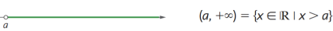

Intervalos Reais
Os intervalos reias servem para representar o intervalo de conjuntos de números
Você usa parenteses para representar um conjunto de números que inclui o numero que você escreveu
Ou você usa colchetes para representar o conjunto sem incluir o numero que você escreveu
Por exemplo, se você quiser representar o conjunto de números
Entre 2 e 4, você faz da seguinte forma: (2,4)
Se você quiser o conjunto de numeros entre 2 e 4, mas sem incluir o numero 2: [2,4)
Agora o mesmo exemplo só que sem incluir nem o 2 e nem o 4: [2,4]
Você também pode representar isso em desenhos
A bolinha furada equivale ao parenteses
E a bolinha preenchida é equivalente ao colchetes

No exemeplo acima tem todas as maneiras de representar o mesmo intervalo de números
A equação matematica ao lado de [3,8] é a equação matemática do intervalo
O [3,8] é a maneira "normal" de escrever esse intervalo
E o desenho na parte de baixo é uma representação do mesmo intervalo só que em um desenho
Você pode observar no desenho que as bolinhas são preenchidas, o que como eu disse anteriormente é o equivalente ao colchetes
Abaixo está um exemplo com a bolinha oca, o equivalente a parenteses

Mais alguns exemplos abaixo

Você também pode usar o símbolo do infinito para representar por exemplo:
todos os números acima de a
eu não senti dificultade nesse conteudo também